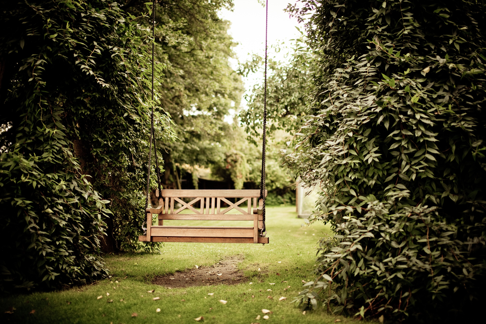

About us
Nestled along the dusty stretch of Route 66, where neon dreams flicker alongside the fading whispers of the past, stands Hotel Motel - a haven for drifters, dreamers, and those seeking solace in the shadows. Built in 1952, its neon sign, once vibrant, now casts an ethereal glow, beckoning weary travelers with the promise of a restless yet unforgettable stay.

Step inside, and the aroma of old vinyl records, worn leather, and a hint of mystery fills the air. The lobby, adorned with faded travel posters and framed photographs of bygone stars, hums with a low, melancholic energy. The receptionist, Ms. Ruby, with eyes that have seen more sunsets than you could count, welcomes you with a knowing smile, her voice a soothing balm against the desert wind. Your room, a portal to a different era, unfolds before you. Vintage furniture whispers tales of past lives, while the dusty portraits on the wall seem to watch your every move. Turn on the radio, and vintage tunes crackle to life, transporting you to a time of sock hops and drive-in theaters. Yet, a sense of unease lingers, a feeling you're not truly alone. Rumor has it, the place is haunted by the ghost of a traveling musician, forever searching for his lost love in the melody of the wind.

But don't let the whispers deter you. Each creak of the floorboard, each flicker of the neon sign, becomes part of the Hotel Motel experience. Here, history brushes against your skin, inviting you to unravel its secrets. Explore the abandoned diner next door, its jukebox forever frozen in a silent song. Wander the desolate poolside, where echoes of laughter mingle with the sighing wind. Or lose yourself in the dusty library, its shelves brimming with forgotten novels and whispered tales. At night, gather with fellow travelers around the crackling campfire, sharing stories beneath the vast desert sky. Let the flames dance in your eyes as you listen to Ms. Ruby regale you with local legends, each one adding another layer to the mystique of Hotel Motel. As the moon paints the night sky silver, you'll sense a connection, not just to the past, but to the kindred spirits around you. Hotel Motel is not just a place to rest your head. It's an experience, a journey into the heart of Americana, where history meets the present, and the line between reality and the supernatural blurs. Come, leave your worries at the door, and step into a world where memories linger, secrets whisper, and the past comes alive. But remember, dear traveler, at Hotel Motel, the adventure doesn't end when you check out. It becomes a part of you, a story etched in your memory, forever intertwined with the magic and mystery of this timeless haven.